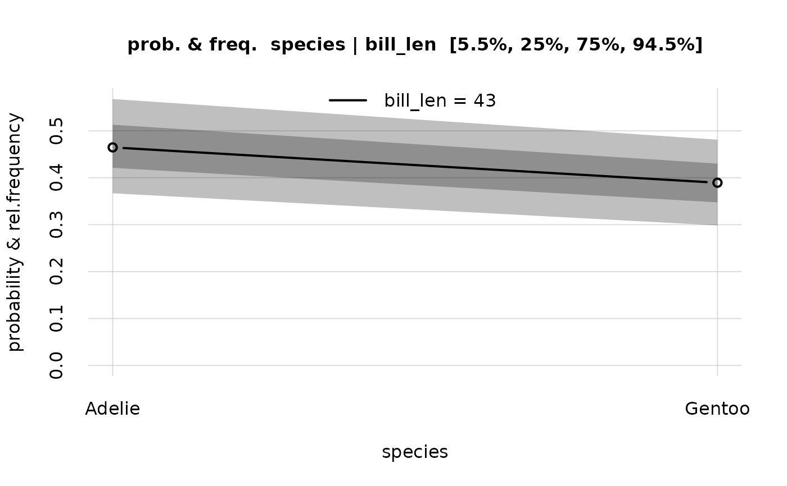
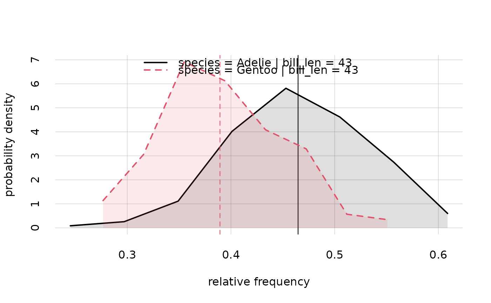

An object of class probability, obtained with the Pr() function, holds the probabilities for all possible combinations of values of a set of joint variates Y conditional on a set of joint variates X, together with the variabilities of these probabilities and some other information. In some cases one may wish to exclude some of the values of the Y or X variates. For instance Y in the probability-class object could include the variate "age" with values from 18 to 100, and one may want to retain the values from 60 to 80.
Usage
# S3 method for class 'probability'
subset(x, subset)Arguments
- x
Object of class "probability", obtained with
Pr().- subset
Named list or named vector: variates to subset, given as list names, and corresponding values to subset.
Value
A list of class probability, identical to the original object x except for a reduced range of values in some if its variates.
See also
Pr(), which generates probability objects.
plot.probability() to plot probabilities and quantiles calculated by Pr() and subset by subset.probability().
hist.probability() to plot histograms of the probability distributions calculated by Pr() and subset by subset.probability().
Examples
## Load the example `learnt` object calculated from the "penguins" dataset;
## variates: 'species' and 'bill_len'
learnt <- learntExample
## Calculate the probability object for the three values of variate 'species',
## given values 43 and 44 of variate 'bill_len';
## this object contains probabilities, quantiles, and other information
probs <- Pr(
Y = data.frame(species = c('Adelie', 'Chinstrap', 'Gentoo')),
X = data.frame(bill_len = c(43, 44)),
learnt = learnt, parallel = 1
)
#> Registered socket cluster with 1 nodes on host ‘localhost’.
#> Closing connections to cores.
probs$values
#> X
#> Y 43 44
#> Adelie 0.4647433 0.2223224
#> Chinstrap 0.1458345 0.2054491
#> Gentoo 0.3894222 0.5722285
## Subset by retaining the values 'Adelie' and 'Gentoo' for species,
## and 44 for bill length
newprobs <- subset(
probs,
subset = list(species = c('Adelie', 'Gentoo'), bill_len = 43)
)
newprobs$values
#> X
#> Y 43
#> Adelie 0.4647433
#> Gentoo 0.3894222
## Plot these conditional probabilities and their variabilities
plot(newprobs)

hist(newprobs)
